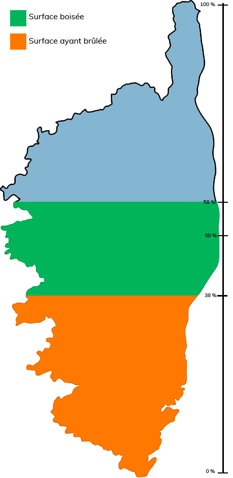

La Corse est la plus boisée des îles de Méditérannée. Avec un taux de boisement de 58% en augmentation, la Corse serait le 5e pays le plus boisé d'Europe. Entre 1973 et 2017, la base de données recensant les feux de forêt (Prométhée) compte un total de 38750 départs de feux, pour un total de 3336 kilomètres carrés brûlés.
Ce chiffre représente environ 38% de la superficie totale de la Corse.

Si les feux de forêt font partie de l'écosystème, commme en témoigne la végétation au moins partiellement adaptée à ceux-ci, les effets du changement climatiques se font ressentir en exacerbant la sécheresse déjà présente dans cette région, ainsi qu'en alongeant et intensifiant la période "chaude" où les végétaux sèchent et deviennent du carburant prêt à brûler.
The region of is particularly touched by forest fires.
The commune of is particularly touched by forest fires.